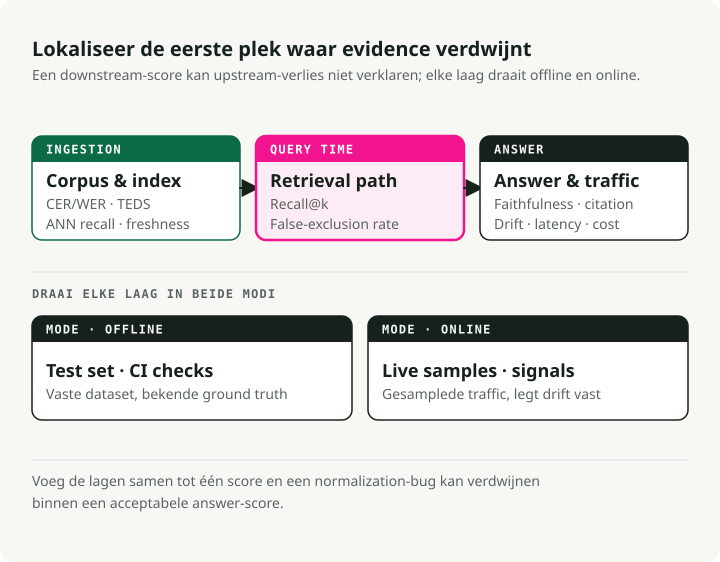
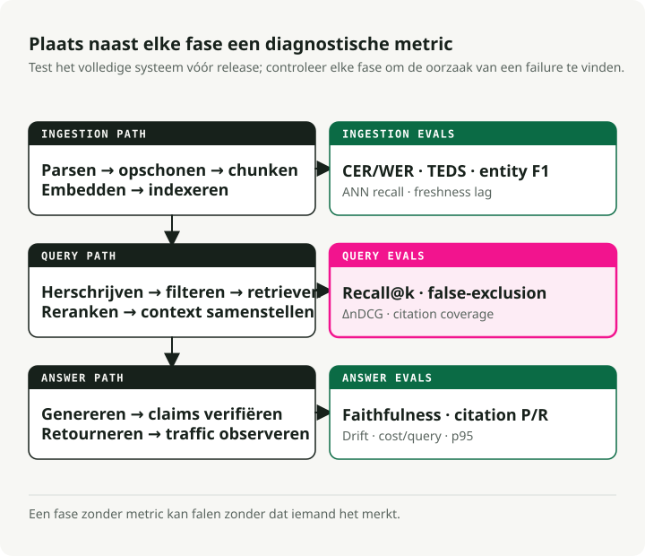
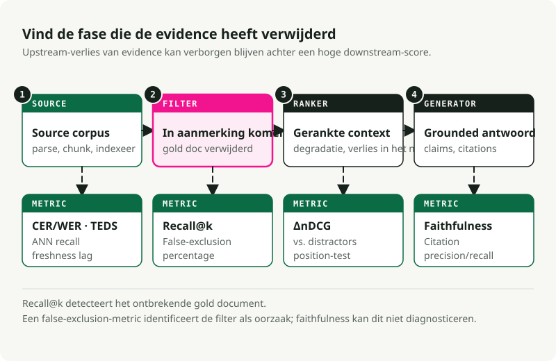

Automatische vertaling
Dit artikel is automatisch vertaald vanuit de oorspronkelijke Engelse versie.
Evaluatie van RAG: Metrieken voor elke fase van een productiesysteem RAG
Deel 1 van de serie over productiesystemen RAG
Een RAG-systeem met defecte filters kan maandenlang draaien voordat iemand het opmerkt. De pipeline levert antwoorden, de latency-dashboards blijven groen, en het enige teken dat er iets mis is, is dat de antwoorden zelf subtiel onjuist zijn. “Subtiel onjuist” zorgt er echter niet voor dat iemand ingrijpt.
Beter loggen helpt hier niet tegen. Evaluatie wel, mits elke fase van de pipeline wordt gedekt door eigen specifieke metrieken. Dit artikel is de referentie die ik graag had gehad toen ik probeerde vast te stellen welke metrieken echt belangrijk zijn.
Wil je direct verder gaan en de code uitvoeren?
Ik heb de metrics uit dit artikel verpakt in een uitvoerbaar bijbehorend repo: slavadubrov/rag-evals-demo. make eval voert het volledige pakket uit — metingen voor informatieopvinding, hybride en RRF-methoden, verbetering door herrankering, filtering van valse uitsluitingen, betrouwbaarheid, het ‘verloren in het midden’-probleem, LLM-as-judge met correctie van vooringenomenheid, en vertraging — op het SciFact-corpus. make benchmark Voert chunking, embedding en LLM-verwerking uit en genereert een markdown-rapport. De notebooks 00–09 behandelen elk metrisch kenmerk afzonderlijk; dezelfde terminologie als in dit artikel, alleen reële getallen, zonder Docker (Qdrant is geïntegreerd).
TL;DR
- Evaluatie bepaalt het karakter van het systeem. Een fase zonder metriek is een fase die stilletjes faalt.
- Een bruikbare evaluatiestack omvat de inname, opvraging, groundings van generatie, conformiteit met de ontologie en systeemsignalen. RAGAS, TruLens, DeepEval, Arize Phoenix, en de TREC 2024 RAG-track Zij leveren de benodigde hulpmiddelen. Zij kiezen echter niet zelf je metrieken voor je uit.
- Bij RAG die is gebaseerd op metadata en ontologieën, is de meest voorkomende fout de ‘stille filter’. Een verkeerde tag of een kwetsbaar, strikt predicaat zorgt er namelijk voor dat de recall-waarde op nul daalt. De nauwkeurigheid kan nog steeds goed lijken, omdat het model trouw antwoordt met “Ik weet het niet”.
De verdere uitleg gaat dieper in op de afzonderlijke secties. Gebruik deze tabel als index.
Besluitentabel voor de evaluatie van RAG
Gebruik deze tabel als uitgangspunt voordat je een framework kiest. De juiste metriek hangt af van het type fout dat je wilt opsporen, en niet van de naam van het hulpmiddel.
| Vraag | Metricfamilie | Gebruik dit wanneer | Let op voor |
|---|---|---|---|
| Is de bron intact gebleven na het parseren? | Volledigheid van de extractie, dekking van tabellen/figuren | PDF’s, presentaties, scans en HTML-pagina’s worden opgenomen in het corpus. | Zelfs tekst met een schone uitstraling kan nog steeds ondertitelingen, voetnoten of tabelstructuur verliezen. |
| Heeft de recuperatie het juiste bewijs gevonden? | Recall@k, nDCG@k, MRR, precisie/recall in de context | Je kunt relevante delen of documenten labelen. | Een strikte metadata-filter kan het juiste document verwijderen voordat de rangschikking begint. |
| Heeft het herranken de shortlist verbeterd? | Verbetering van de reranker, Precision@1, nDCG-delta | Cross-encoders of LLM rankers bevinden zich na de retrieval-stap. | Meet de vertraging en kosten met de behaalde kwaliteitsverbetering |
| Is het antwoord gebaseerd op het bewijsmateriaal? | Getrouwheid, grondigheid en ondersteuning voor citaties | Het antwoord vermeldt documenten of baseert feiten op de context. | Faithfulness kan geen slechte parsing of slechte retentie diagnosticeren. |
| Is het systeem stabiel in productie? | Drift, regeneratie, fallback, p95-vertraging, kosten per antwoord | Verkeerspatronen veranderen na de lancering | Productietelemetrie vereist gemonitorde menselijke evaluatie om gekalibreerd te blijven |
Voor een kortere vergelijking van tools, zie De beste RAG-evaluatiehulpmiddelen en -metrieken in 2026## Deel 1 — Waarom eerst evalueren
Het belangrijke signaal
Bij een RAG-project moet het architectuurdiagram niet het eerste resultaat zijn. De evaluatieset moet dat wel zijn.
Je kunt niet kiezen tussen BM25 en dense retrieval, recursief of semantisch chunking, of Cohere Rerank en BGE voordat je weet wat je precies wilt optimaliseren. “Betere antwoorden” is geen meetgrondslag. “Een nauwkeurigheid van ≥ 0,85 op een set van 200 vragen die onze drie belangrijkste intenties dekt, met een p95-latentie van < 1,5 seconden en een foutieve uitsluitingsratio van < 2%” is daarentegen wel een meetgrondslag.
Definieer eerst de benodigde infrastructuur voordat je de code voor het opzoeken schrijft. De eerste versie zal onjuist zijn en moet worden aangepast. Een meetgrondslag aanpassen is veel goedkoper dan een systeem dat al in productie is, nogmaals aanpassen.
Drie lagen, geen enkel getal
Moderne RAG-systemen werken als pijpleidingen, dus ook de evaluatie moet als zodanig worden uitgevoerd. Geen enkel enkel getal kan alle mogelijke fouten detecteren.
Productie-evaluatie bestaat uit drie lagen: offline (is de kennisbasis correct voorbereid?), online (is er het juiste bewijs gevonden en gebruikt voor deze vraag?) en post-generatie (is het antwoord betrouwbaar en te controleren?). Elke laag stelt een andere vraag. Als je ze samenvoegt tot één score, kun je fundamentele fouten over het hoofd zien, zoals een normalisatiefout die de herinneringscapaciteit van het systeem ernstig beïnvloedt.

Dezezelfde indeling maakt het mogelijk om onderscheid te maken tussen online en offline evaluatie. Offline-tests worden uitgevoerd tegen een vast dataset met bekende juiste waarden. Hierdoor is de resultaatreproducibiliteit hoog, zijn iteraties goedkoop, en is dit de geschikte manier voor componentselectie, A/B-vergelijkingen en CI-gates. Online-tests daarentegen vinden plaats in echte gebruikersverkeerstromen. Hierdoor kunnen signalen worden geregistreerd die offline niet kunnen worden nagebootst, zoals de regeneratierate, verblijfsduur, gebruik van vingers om te scrollen en echte schommelingen in de query’s. Echter, dit type testing oplevert veel ruis en is moeilijker goed te monitoren.
Je hebt beide nodig. Alleen offline-testing zorgt er namelijk voor dat echte schommelingen in het systeem over het hoofd worden gezien. Alleen online-testing maakt het bovendien moeilijk om regressies na te bootsen. Het uitvoeren van beide vereist meer werk, maar dit is de enige aanpak die bruikbare feedback geeft voordat en na de lancering.
Op componentniveau versus end-to-end
Er zijn twee veelvoorkomende fouten. Evaluatie uitsluitend op end-to-end-niveau geeft aan dat het systeem defect is, maar niet waar precies. Evaluatie uitsluitend op componentniveau kan aantonen dat alle onderdelen goed werken, terwijl het gehele systeem nog steeds faalt. De oplossing is om enkele belangrijke end-to-end-metingen te gebruiken voor beslissingen over ‘doorgaan’ of ‘stoppen’, gecombineerd met componentmetingen voor diagnostiek. Met retrieval-metingen kunnen regressies in de retriever worden opgespoord, terwijl generation-metingen regressies in de generator detecteren. End-to-end antwoordcorrectheid helpt bij het opsporen van integratiefouten.
De referentieramenwerken (een bepaalde benadering)
| Framework | Best in | Waar het misgaat |
|---|---|---|
| RAGAS | Metrics voor RAG zonder referentiegegevens (getrouwheid, relevantie van antwoorden, precisie/recall van context); het feitelijke woordenschat | Kosten voor LLM-rechters; ondoorzichtige componenten van de scores bij het oplossen van problemen; standaardinstellingen die gericht zijn op het Engels |
| ARES | De getrainde classificator beoordeelt elke pipeline afzonderlijk; er zijn minder annotaties nodig dan bij RAGAS-gebaseerde methoden; hoge nauwkeurigheid voor systemen met vergelijkbare prestaties. | Zwaardere configuratie; je moet de modellen daadwerkelijk trainen. |
| TruLens | Composable feedbackfuncties met uitstekende uitleesbaarheid; OpenTelemetry-traces; geschikt voor productieomgevingen | Er zijn minder batterijen inbegrepen bij de RAG-specifieke metrieken dan bij RAGAS. |
| DeepEval | Pytest-gebaseerde eenheidstests voor de uitvoer van LLM’s; G-Eval, aangepaste metrieken, geïntegreerd in CI/CD-pipelines | Hoge gebruikskosten voor LLM-judges = stijging van de kosten |
| Arize Phoenix | Sterke tracering en visualisatie van embeddings; detecteert visueel afwijkingen in embeddings; OTEL-natief | Je brengt je eigen definities van metrics mee. |
| TREC 2024 RAG-track | Publice benchmark voor evaluatie van nuggets (AutoNuggetizer), ondersteunende evaluatie en vloeiendheid op MS MARCO Segment v2.1 | Geen runtime-hulpmiddel; een benchmark om tegen te kalibreren |
Mijn standaardstack bestaat uit RAGAS voor het metriekvocabulaire, DeepEval voor CI-gates, Phoenix voor productietracing, plus aangepaste code voor metrieken die specifiek zijn voor de ontologie. U zult uiteindelijk alles wat u nu begint te gebruiken te klein vinden. Kies het framework dat het gemakkelijk maakt om aangepaste metrieken te ontwikkelen.
Voor benchmarks, gebruik BEIR (Thakur et al., NeurIPS 2021) voor generalisatie van zero-shot retrieval. MTEB voor de algemene kwaliteit van de embeddings. MIRACL voor multilinguele retrieval, en de TREC 2024 RAG-track voor evaluatie van end-to-end RAG.
Deel 2 — Het pipeline met evaluatiepunten
Een productief RAG-systeem omvat meer dan alleen het embedden van documenten, het ophalen van fragmenten en het aanroepen van een LLM. Elke stap tussen het verkrijgen van documenten en het leveren van antwoorden kan mislukken.

Elke fase in het diagram bevat ten minste één metriek. Een fase zonder metriek kan falen zonder dat iemand het opmerkt.
De drie kanalen komen overeen met de punten waar fouten optreden. Het offline-kanaal omvat alles wat er gebeurt voordat een query wordt verwerkt: parsing, cleaning, chunking, embedding en indexing. Het online-kanaal omvat alles wat er gebeurt nadat een query is binnengekomen: herschrijven, opvragen, herranken en samenstellen van context. Het post-generation-kanaal omvat controles na het genereren van een antwoord door het model: nauwkeurigheid, verificatie van citaten, signalen van drift en productietelemetriek.
Fouten stapelen zich op langs de keten. Slechte parsing beperkt het mogelijk aantal chunks. Slechte chunking beperkt het mogelijk aantal gevonden resultaten. Slechte opvraging beperkt het herrankingsproces. Slechte herranking beperkt de generatie van het antwoord. Nauwkeurigheid meet alleen het eindantwoord, nooit de oorzaken daarvoor.
Deel 3 — Evaluatie van offline invoerverwerking
Veel fouten bij RAG-systemen in productie beginnen al bij de invoerverwerking. Het systeem werkt goed met schone testdocumenten, maar faalt vervolgens bij echte PDF’s, scans, tabellen en rommelige pagina’s uit het corpus.
Documentacquisitie en parsing
Wat moet worden gemeten:
- Volledigheid van de tekstextractie:
extracted_chars / expected_charsop een gelabeld voorbeeld, berekend per documentklasse. Er is geen standaardpakket — schrijf een klein hulpprogramma dat de uitvoer van de parser vergelijkt met een handmatig gecorrigeerde referentie. Let op ontbrekende voetnoten, koppen en bijschriften. -
OCR-precisie: CER (Character Error Rate) en WER (Word Error Rate), de standaardmetrieken voor spraak/OCR:
\[ \text{CER} = \frac{S + D + I}{N}, \qquad \text{WER} = \frac{S_w + D_w + I_w}{N_w} \]waarbij \(S\), \(D\), \(I\) karakterniveau substituties, verwijderingen en invoegingen zijn en \(N\) het referentieaantal karakters is (onderstreping \(w\) voor de woordversie). Een CER van 1–2% is goed voor gedrukt tekst; >10% is onbruikbaar. Voor handgeschreven of meertalig materiaal kan een waarde van ≤20% nog steeds bruikbaar zijn. Bereken dit met
jiwer(jiwer.cer(refs, hyps),jiwer.wer(refs, hyps)) of HuggingFaceevaluate. Voor evaluatiecorpora, FUNSD en SROIE dit zijn de openbare benchmarks.from jiwer import cer, wer refs = ["Mars has two moons, Phobos and Deimos."] hyps = ["Mars has two m00ns, Phobos and Deirnos."] print(f"CER = {cer(refs, hyps):.3f}") # CER = 0.077 print(f"WER = {wer(refs, hyps):.3f}") # WER = 0.286 -
Nauwkeurigheid van tabelextractie: TEDS (Tree-Edit-Distance-based Similarity) meet in hoeverre de voorspelde HTML-tabelboom overeenkomt met de referentieboom, gecorrigeerd voor het formaat van de grotere boom. Van Zhong et al., 2020 (PubTabNet):
\[ \text{TEDS}(T_a, T_b) = 1 - \frac{\text{EditDist}(T_a, T_b)}{\max(|T_a|, |T_b|)} \]TEDS maakt gebruik van zowel de structuur (rijen, kolommen, spans) als de inhoud van de cellen; TEDS-S verwijdert de inhoud en evalueert uitsluitend de structuur. Referentiimplementatie: PubTabNet’s
teds.py(Een) gebruik vanaptedonder de motorkap). Voor evaluatiecorpora, zie PubTabNet. FinTabNeten SciTSR. Naïeve parsers falen vaak bij het verwerken van tabellen; voer eerst een benchmark uit voordat u ze vertrouwt. -
Behoud van lay-out/structuur: volgorde van koppen, integriteit van lijsten, leesvolgorde in meerkolommige PDF’s. Gebruik DocLayNet voor een gelabelde benchmark; voor een vergelijking met geïmporteerde parsers,
unstructured,pymupdf, en een VLM-parser zoalsdoclingHet grootste deel van het ontwerpgebied bedekken.
Mijn voorstel: voer benchmarks uit met drie parsers (een Tesseract-baseline, een VLM-OCR-model en uw gekozen oplossing) op een gestratificeerde steekproef van echte documenttypen (schone scans, foto’s, pagina’s met veel tabellen, meertalige documenten, wiskundige formules, handgeschreven tekst) bij een vaste DPI. Rapporteer de CER/WER-waarden per type, plus de TEDS-waarden voor pagina’s met tabellen. Zonder deze gegevens gokt u alleen maar.
Reiniging en normalisatie
- Nauwkeurigheid van het verwijderen van boilerplate: precisie/herinnering vergeleken met door mensen gelaagde boilerplate-intervalletjes. Agressief verwijderen vernietigt relevante inhoud; traag verwijderen vervuilt de embeddings. Hulpmiddelen voor vergelijking:
trafilatura,jusText,Resiliparse. Barbaresi (2021) Voer benchmarks uit waarbij deze methoden rechtstreeks tegen elkaar worden vergeleken. - Unicode-normalisatie: het percentage documenten dat identieke NFC- en NFKC-output genereert (berekend met de stdlib)
unicodedata.normalize) is een nuttig signaal voor drift. Onovereenstemmingen zijn de oorzaak waardoor zero-width joiners en gelijkende tekens de herinneringsratio bij het opzoeken beschadigen. - Nauwkeurigheid van taaldetectie: F1-score op een gemarkeerd multilinguaal voorbeeld. Essentieel voor multilinguale indexen. Gebruik
fasttext-langdetect(van Facebook’slid.176),lingua-py, ofcld3; FLORES-200 is de standaardbenchmark voor talen met beperkte bronnen. -
Effectiviteit van deduplicatie (MinHash / LSH): de precisie/recall van uw detector voor near-duplicates vergeleken met een handgemaakte gelaagde set. Het onderliggende principe: schatten van de Jaccard-similarity \(J(A, B) = \frac\)|A ∩ B|}{|A ∪ B|\(-\) tussen documentsets via \(k\) willekeurige permutatiehashes (Broeder, 1997) en naburige duplicaten samenvoegen met LSH-bandingIndyk & Motwani, 1998). De standaardconfiguratie is Standard MinHash met 128 hash-functies en LSH-banding afgesteld op een Jaccard-threshold van 0,7–0,85; voer een benchmark uit op uw eigen gegevens, aangezien de juiste threshold corpus-specifiek is. Houd de foutieve merge-rate (die leidt tot beschadigde antwoorden) apart bij van de gemiste merge-rate (die indexruimte verspilt).
datasketchhet canonieke Python-pakket is:from datasketch import MinHash, MinHashLSH def shingles(text: str, k: int = 5) -> set[str]: text = text.lower() return {text[i:i + k] for i in range(len(text) - k + 1)} def to_minhash(text: str, num_perm: int = 128) -> MinHash: m = MinHash(num_perm=num_perm) for s in shingles(text): m.update(s.encode("utf-8")) return m docs = { "d1": "Mars has two moons, Phobos and Deimos.", "d2": "Mars has two moons, Phobos and Deimos!", # near-dup "d3": "Curiosity rover landed on Mars in 2012.", } lsh = MinHashLSH(threshold=0.8, num_perm=128) for did, text in docs.items(): lsh.insert(did, to_minhash(text)) print(lsh.query(to_minhash(docs["d1"]))) # ['d1', 'd2'] -
PII-wissing: nauwkeurigheid en herinneringsratio, beide apart berekend per entiteittype (e-mails, SSN’s, namen, adressen). Fouten op het gebied van de herinneringsratio leiden tot risico’s met betrekking tot naleving; fouten op het gebied van de nauwkeurigheid beïnvloeden de kwaliteit van de antwoorden. Stel het optimale niveau vast in overleg met het juridische team. Hulpmiddelen: Microsoft Presidio (het meest complete)
scrubadub, of een gefineerde NER-model op een gelabeld dataset.
Chunking — de fase die stilletjes beslist over het ophalen van gegevens
Het indelen in chunks is een van de meest invloedrijke beslissingen bij RAG. De verkeerde strategie kan zelfs met dezelfde embeddings leiden tot een groot verschil in het herkennen van elementen. De benchmarkresultaten van NVIDIA voor 2024 gaf paginagewijze chunking de hoogste nauwkeurigheid met de laagste variatie voor gepagineerde documenten; semantische chunking (groeperen van aangrenzende zinnen op basis van embedding-gelijkheid en het doorsnijden bij ongelijke grenzen — geïmplementeerd in LangChain’s SemanticChunker en LlamaIndex's SemanticSplitterNodeParser) kan de recall verbeteren ten opzichte van chunking met een vaste window; recursieve karakterverdeling (probeer eerst paragraafbreuken, daarna zinsbreuken en vervolgens woordbreuken, totdat elke chunk past binnen de gewenste grootte — zie LangChain’s RecursiveCharacterTextSplitter) een lengte van 400–512 tokens met een overlap van 10–20% blijft een goede standaard voor algemene tekst.
Metrieken om in de gaten te houden:
- Chunk coherentie: \(\text{coherentie} = \overline{\cos(s_i, s_j)}_{\text{binnen}} - \overline{\cos(s_i, s_j)}_{\text{buiten grens}}\), waarbij \(s_i\) zinnenembeddings zijn. Gezonde chunks zijn intern vergelijkbaar en verschillend aan de grenzen. Bereken dit met
sentence-transformersplusscikit-learn'scosine_similarity. - Kwaliteit van de grenzen: menselijke labeling van “Is dit een logische splitsing?” op een voorbeeld, gecombineerd met een structurele controle om te voorkomen dat fragmenten tabellen, lijsten of genummerde secties splitsen (de meest voorkomende fout in productieomgevingen).
- Optimale grootte van de fragmenten: test verschillende tokengrootten (128, 256, 512, 1024) en traceer de relatie tussen Recall@k en grootte op je gouden dataset. Kies het punt waar de verbetering stopt; volg niet zomaar wat in de handleiding staat.
- Effectiviteit van de overlapping: verander de overlappingsscore (0%, 10%, 20%, 30%) en meet de Recall@k-waarde. Boven ongeveer 20% zijn er nauwelijks nog verbeteringen in de meeste corpora.
- Betrouwbaarheid van de toewijzing van fragmenten: het percentage fragmenten dat een verifieerbare bronverwijzing bevat (paginanummer, sectieanker, document-ID). Auditbaarheid vereist dit.
- Late versus vroege chunking: late chunking (Günther et al., 2024) embedt het volledige document en segmenteert dit vervolgens, waardoor de globale context behouden blijft (referentieimplementatie in
jina-embeddings-v3). Contextueel opvragen (Anthropic, 2024) voegt de door de LLM gegenereerde context toe aan elke chunk. Beide methoden leiden tot extra kosten. Voer eerst een benchmark uit op uw eigen corpus voordat u er één van adopteert.
Mijn mening: structurele chunking (het splitsen op koppen, tabellen en secties — gerealiseerd door parsers zoals) unstructured.io of door het AST dat uw parser al heeft gegenereerd te doorlopen, wordt nauwelijks benut. Als uw documenten een structuur hebben, maak u deze dan eerst gebruik van voordat u similariteitshybriden toevoegt. Recursieve karaktersplitsing vormt de basis; semantisch chunking is alleen de moeite waard voor ongestructureerde tekst.
- NER nauwkeurigheid/herinnering/F1: per entiteitentype, op een gelabeld deelgeheel. In de standaard CoNLL/MUC-stijl. Bereken met
seqeval(from seqeval.metrics import f1_score) voor de versie die rekening houdt met BIO/IOB-tags, of scikit-learn voor vergelijkingen van spansets. CoNLL-2003 en OntoNotes 5.0 vormen de standaardreferentiecorpora. - Relation extraction F1: nog belangrijker voor op ontologieën gebaseerde systemen. Label 200 documenten handmatig. TACRED en DocRED zijn de publieke benchmarks; voor productiecode,
opennreenspaCyRelatiepijpleidingen vormen een redelijke uitgangspunt. - Nauwkeurigheid van titel/hoofdingsextractie: exacte overeenkomst gecombineerd met genormaliseerde Levenshtein-similarity (\(1 - \frac{\text{edit\_dist}(a, b)}{\max(|a|, |b|)}\)) vergeleken met de ground truth —
python-LevenshteinofrapidfuzzIk geef ze allebei in één oproep. - Behoud van hiërarchische metadata: het percentage chunks dat correct de bijbehorende sectie, het moederdocument en de voorouderpaden behoudt. Dit is de metriek die bepaalt of uw RAG vragen van het type “Wat zegt het kind van beleid X?” kan beantwoorden.
Generatie van embeddings
- Benchmarking voor modelselectie: MTEB voor algemene capaciteit (nDCG@10 is de belangrijkste indicator; de MTEB Python-pakket zodat je de leaderboard lokaal kunt reproduceren), BEIR voor zero-shot generalisatie, MIRACL Voor meertalige toepassingen vallen de beste retrieval-modellen samen in een smalle band van nDCG@10, maar Engelse MTEB-scores geven slechts een zwakke indicatie van de prestaties op talen met minder beschikbare bronnen.
- Domain-specifieke evaluatie: vertrouw niet op algemene benchmarks voor domein-specifieke corpora. Maak een ‘golden set’ van 200–500 query/doc-paren voor het desbetreffende domein en rangschik de kandidaatmodellen opnieuw op basis daarvan.
ranxofpytrec_eval. Ik heb herhaaldelijk gezien dat een model dat op de #5 plaats staat op MTEB een model dat op de #1 plaats staat met meer dan 15 punten verslaat op een specifiek domein. - Detectie van embedding-drift: houd de distributieve KL-of modellen gebaseerde drift in de gaten tussen een vaste referentieruimte en rollende productie-embeddings; stabiliteit op basis van de dichtstbijzijnde buren voor een vaste set probes vormt het eenvoudigste bruikbare signaal.
evidentlyenalibi-detectBeide implementeren zowel modelgebaseerde als statistische detectoren voor drift. Die van Evidently. vergelijkend onderzoek Er wordt voorkeur gegeven aan detectie van modeldrift op basis van modellen als standaard. - Meervoudige vector versus enkele vector: late interactie (ColBERT / ColBERTv2 — zie Khattab & Zaharia, 2020; referentieimplementaties in RAGatouille en PyLate) levert doorgaans een winst op bij gebruik buiten het eigen domein, met een opslagkost die 6–10 keer lager ligt (bij compressie in PLAID-stijl; ongecomprimeerd is de omvang veel groter). Het is de moeite waard wanneer je corpus sterk verschilt van de trainingsverdeling van het embeddingmodel. Anders blijf je beter bij single-vector.
Indexconstructie
- Recall@k onder benadering: vergelijk de approximate-nearest-neighbour (ANN)-index met een exacte brute-force-baselines bij dezelfde k — in FAISS, dat is
IndexHNSWFlat(of)IndexIVFFlat) versusIndexFlatIP/IndexFlatL2. Streef ernaar een recall van ≥95%@10 te bereiken, in tegenstelling tot een constante waarde.ann-benchmarksHet project houdt de recall–QPS Pareto-curven bij voor verschillende bibliotheken. - HNSW-optimalisatie: HNSW (Hierarchical Navigable Small World — een gestapelde nabijheidsgraaf; zie Malkov en Yashunin, 2018, geïmplementeerd in
hnswlib, FAISS’sIndexHNSWFlat, en de meeste vector-Databases) bieden drie instellingen:M(graphfan-out)efConstruction(breedte van het kandidaat-object tijdens de compilatie)efSearch(query-tijd kandidaatbreedte). Praktische standaardwaarden: M=16–32, efConstruction=150, efSearch begint bij 100 en wordt verhoogd totdat de recall tot stilstand komt. Een dataset met 10M vectoren waarbij efSearch=500 een recall van 98% kan opleveren bij 5ms; efSearch=100 daalt tot 85% bij 1ms. Kies het recall-niveau dat vereist is door uw evaluatiegegevens. - IVF-tuning: IVF (Inverted File Index — verdeling van vectoren met k-means in)
nlistcellen, en scannen ze vervolgens bij het uitvoeren van de query.nprobedichtstbijzijnde cellen; zie FAISS’sIndexIVFFlatenIndexIVFPQ). Gebruiknlist≈ √N als startheuristiek en afstemmennprobetijdens de uitvoering. IVF verwerkt gefilterde zoekopdrachten over het algemeen efficiënter dan HNSW, wat belangrijk is voor op ontologie gebaseerde systemen met veel metadata-predicaten. - Vertraging in updatefrisheid: de tijd vanaf het opslaan van een document tot het beschikbaar zijn ervan voor opvraging. Houd rekening met p50 en p99. Voor systemen met regelgevende eisen moet ook het percentage aanvragen dat wordt verwerkt met verouderde indexen worden bijgehouden.
Deel 4 — Evaluatie van online inferentie
In het online segment bevinden zich de meeste productiemetingen. Veel teams houden het bij Recall@k. Dat is onvoldoende.
Begrip en herschrijving van query’s
- Kwaliteit van query-expansie: Recall@k verbetering op uw gouden dataset, vergeleken met de uitgebreide query versus de oorspronkelijke query. Als deze verbetering bij moeilijke queries niet minstens +5% bedraagt, schaadt uw expansiemodule meer dan dat het helpt. Classieke PRF-baselines (pseudo-relevante feedback) zoals RM3 en Bo1 ze blijven nuttige sanity checks; uitbreidingen gebaseerd op LLM’s moeten ze overtreffen.
- HyDE-evaluatie: HyDE (Gao et al., 2022) genereert een hypothetisch antwoord met de LLM, embedt dit antwoord en voert vervolgens een zoekopdracht uit op basis daarvan — een nuttig hulpmiddel dat echter vertraging veroorzaakt en de kans op hallucinaties vergroot. Beoordeel het door te kijken naar de verbetering in Recall@10 bij vragen uit een andere domein (waar het zijn sterke punten heeft) en zorg ervoor dat er geen verslechtering optreedt bij vragen uit het eigen domein (waar het schadelijk kan zijn). Gebruik het alleen als back-up wanneer de zekerheid van de zoekresultaten laag is, en niet als standaardoptie. Valideer de op hypothetische antwoorden gebaseerde zoekresultaten met een cross-encoder reranker die later in het proces wordt gebruikt.
- Meervoudige querygeneratie: De union van Recall@k uit N herwerkingen versus één enkele query. De terugwinst neemt af na 3–4 herwerkingen. Implementaties: LangChain’s
MultiQueryRetriever, van LlamaIndexQueryFusionRetriever. - Accurateheid van intentieclassificatie: standaard precisie/herinnering/F1 per intentie (bereken met
sklearn.metrics.classification_report), maar de belangrijkste metriek is routingcorrectheid — wordt het juiste downstream-pipeline-aanroepen uitgevoerd? - Adaptieve routing: Adaptieve RAG (Jeong et al., NAACL 2024) stelt dat niet elke zoekopdracht dezelfde strategie voor het ophalen van gegevens verdient. Meet de nauwkeurigheid van de routering als een classificatieprobleem aan de hand van een gelaagd set met labels zoals “geen ophaling nodig / one-shot / iteratief”.
Metrieken voor ophaling
Dit zijn de basismetrieken. Als je deze niet bijhoudt, kun je niet bepalen of de prestaties bij het ophalen van gegevens verbeteren.
| Metrica | Wat het meet | Wanneer te gebruiken |
|---|---|---|
| Recall@k | percentage van de queries waarbij er een relevante document in de top k aanwezig is | De belangrijkste metriek voor het ophalen van gegevens in RAG; als deze laag is, doet alles daarna er niet toe. |
| Precision@k | Het percentage van de top-k elementen dat relevant is | Handig wanneer het contextvenster de beperkende factor is. |
| MRR | gemiddelde van 1/rank van het eerste relevante document | wanneer gebruikers alleen naar de top-1 of top-3 kijken |
| nDCG@k | positiegerelateerde winst, gewogen naar relevantiegraden | De standaardmetriek voor het bepalen van de gerangschikte relevantie |
| MAP | gemiddelde precisie per zoekopdracht | wanneer je rekening houdt met de volledige gerangschikte lijst |
| Hit Rate@k | binaire versie van Recall@k | Snelle validatie-metriek |
| Dekking | Het percentage gouden documenten dat ooit is opgehaald uit alle zoekopdrachten | vindt systematische gaten in de index |
De formules, ter referentie (binaire relevantie met het relevante verzameling \(R_q\) voor de query \(q\), en \(\text{rel}_i = 1\) indien het \(i\)-de geraadpleegde document zich in \(R_q\) bevindt):
Voor geclassificeerde relevantie geldt dat \(\text{rel}_i \in \{0, 1, 2, \dots\}\); binaire nDCG is het speciale geval dat wordt gebruikt in de onderstaande code. MAP is de gemiddelde waarde over alle zoekopdrachten van \(\text{AP}_q = \frac{1}{|R_q|}\sum_{i: \text{rel}_i = 1} \text{Precision@}i\). Zie Manning, Raghavan, Schütze, Inleiding tot informatieopvinding, hoofdstuk 8 voor de afleidingen.
Voor productiecode, gebruik ranx, pytrec_eval, of ir_measures — ze implementeren de volledige TREC-metriekfamilie en hanteren gegradeerde relevantie correct. Redelijke startdoelstellingen zijn: Recall@10 ≥ 0,85, MRR ≥ 0,6 en nDCG@10 ≥ 0,7. Deze moeten worden vastgesteld op basis van een realistisch gouden dataset, en niet uit een tutorial worden gehaald.
Het testframework voor deze tools is kort. U kunt het al uitvoeren vanuit een notebook, nog voordat u een vectordatabase hebt gekozen.
from math import log2
from statistics import mean
# synthetic gold set: query_id -> set of relevant doc ids
gold = {
"q1": {"d3"},
"q2": {"d7", "d2"},
"q3": {"d11"},
"q4": {"d5"},
}
# ranked retrieval results: query_id -> ranked list of doc ids (top-10)
runs = {
"q1": ["d8", "d3", "d1", "d4", "d2", "d9", "d6", "d10", "d12", "d13"],
"q2": ["d2", "d6", "d4", "d7", "d1", "d3", "d8", "d11", "d5", "d9"],
"q3": ["d11", "d2", "d3", "d4", "d1", "d6", "d7", "d8", "d10", "d12"],
"q4": ["d1", "d2", "d3", "d6", "d8", "d9", "d10", "d12", "d13", "d14"],
}
def recall_at_k(ranked, gold_set, k):
if not gold_set:
return 0.0
hit = sum(1 for d in ranked[:k] if d in gold_set)
return hit / len(gold_set)
def reciprocal_rank(ranked, gold_set):
# MRR contribution per query: 1/rank of the first relevant doc.
for rank, d in enumerate(ranked, start=1):
if d in gold_set:
return 1.0 / rank
return 0.0
def ndcg_at_k(ranked, gold_set, k):
# binary relevance: rel ∈ {0, 1}
gains = [1.0 if d in gold_set else 0.0 for d in ranked[:k]]
dcg = sum(g / log2(i + 2) for i, g in enumerate(gains))
# ideal DCG: all gold docs ranked first, capped by k
n_gold_in_topk = min(k, len(gold_set))
idcg = sum(1.0 / log2(i + 2) for i in range(n_gold_in_topk))
return dcg / idcg if idcg else 0.0
K = 5
print(f"Recall@{K}: {mean(recall_at_k(runs[q], gold[q], K) for q in gold):.3f}")
print(f"MRR: {mean(reciprocal_rank(runs[q], gold[q]) for q in gold):.3f}")
print(f"nDCG@{K}: {mean(ndcg_at_k(runs[q], gold[q], K) for q in gold):.3f}")
# Recall@5: 0.750
# MRR: 0.625
# nDCG@5: 0.627
Dat is je retrieval CI-gate. Koppel het aan een gouden set met 200 queries en voer het uit bij elke PR. Als een van de drie cijfers verslechtert, blokkeer dan de merge en lost de regressie op.
Het bijbehorende repository pinnt de exacte getallen hierboven vast.Recall@5 = 0.750, MRR = 0.625, nDCG@5 = 0.627) als een eenheidstest in tests/test_retrieval_metrics.py; Notitieboek 01 voert sweeps Recall@k / MRR / nDCG uit op een echte SciFact-index, en de productiegerichte omgeving bevindt zich in evaluation/retrieval.py. Robertson & Walker, 1994 — exacte termovereenkomst met gewichting in TF-IDF-stijl en normalisatie op lengte, beschikbaar in rank_bm25, Elasticsearch/OpenSearch en de meeste zoekmachines), gecombineerd met dichte fusie via Fusie van wederzijdse rangen (Cormack, Clarke, Buettcher, SIGIR 2009) met k=60 vormt een sterke standaardinstelling. RRF is score-onafhankelijk, waardoor het de problemen rond score-normalisatie die gepaard gaan met lineaire interpolatie omzeilt. Als u 50 of meer gelabelde query-paren heeft, probeer dan een convexe combinatie en passeer α af. Een hybride aanpak in combinatie met een cross-encoder reranker presteert meestal beter dan alleen-dichte of alleen-sparsere retrievalmethoden op technische, loggen-achtige en codecorpora. Op sterk semantische corpora kan het voordeel echter klein zijn. Meet de prestaties op uw eigen gegevens; een slechte fusieconfiguratie kan zelfs slechter presteren dan alleen-dichte retrieval. De implementatie past in een paar regels.
from collections import defaultdict
# two retrieval lanes: dense embeddings and BM25.
dense = ["d3", "d7", "d1", "d4", "d2", "d9", "d10"]
sparse = ["d2", "d3", "d8", "d1", "d11", "d4", "d6"]
def rrf(rankings: list[list[str]], k: int = 60) -> list[tuple[str, float]]:
"""Reciprocal Rank Fusion (Cormack et al., SIGIR 2009).
score(d) = sum over rankings of 1 / (k + rank(d))
Score-agnostic: only rank position matters. k=60 is the canonical default.
"""
scores: dict[str, float] = defaultdict(float)
for ranking in rankings:
for rank, doc in enumerate(ranking, start=1):
scores[doc] += 1.0 / (k + rank)
return sorted(scores.items(), key=lambda kv: kv[1], reverse=True)
fused = rrf([dense, sparse], k=60)
for doc, score in fused[:5]:
print(f"{doc} score={score:.5f}")
# d3 score=0.03252 <- rank 1 dense, rank 2 sparse
# d2 score=0.03178 <- rank 5 dense, rank 1 sparse
# d1 score=0.03150
Let op wat RRF niet doet: het kijkt nooit naar de ruwe similariteitscores. Een dense retriever die een cosinuswaarde van 0,98 teruggeeft en een BM25-algoritme dat een score van 17,4 oplevert, zijn niet direct vergelijkbaar. Als je ze normaliseert met z-scores of min-max-scaling, kan dit ertoe leiden dat de methode met de hoogste variatie in die batch de voorkeur krijgt.
RRF maakt uitsluitend gebruik van rang. Als een retriever een document op positie 2 plaatst, is die stem waard 1 / (60 + 2)ongeacht het ruwe scoreniveau dat dit heeft opgeleverd.
Hybrid + RRF op SciFact: Notitieboek 02 vergelijkt dense met BM25 en RRF, inclusief per-query verschillen. De voor productie gebruikte fuser is in retrieval/hybrid_rrf.py; tests/test_rrf.py pinnt de canonieke versie vast d3 / d2 / d1 Bestelling plaatsen bij k=60### Herranken
- ΔnDCG / ΔMRR: de enige betrouwbare metric voor herrankers – de verbetering ten opzichte van geen herranken, op uw gouden dataset, op de diepte die uw applicatie daadwerkelijk gebruikt. Bereken dit door uw retrieval-metrics te uitvoeren met en zonder de herranker op identieke kandidaatsets.
- Cross-encoder versus bi-encoder: een bi-encoder embedt de query en het document onafhankelijk (één vector per kant) en bepaalt de score via een dotproduct; een cross-encoder concateneert query+document en voert één enkele forward pass uit waarbij beide elementen gezamenlijk worden verwerkt. Cross-encoders leveren bijna altijd betere relevanties op, ten koste van één extra forward pass per kandidaat. Referentieimplementatie:
sentence-transformersCrossEncoder. In gepubliceerde benchmarks haalt BGE-reranker-v2-m3 ongeveer 80 ms per 100 kandidaten op een GPU en ongeveer 350 ms op een CPU, en de kwaliteit komt overeen met die van Cohere Rerank zonder extra kosten. Beschouw deze cijfers als ordes van grootte — uw hardware en batchgrootte zullen ze beïnvloeden. - Listwise versus pointwise: bij pointwise worden elke (query, doc)-pair afzonderlijk beoordeeld; bij listwise wordt de hele lijst met kandidaten gezamenlijk beoordeeld, zodat het model rechtstreeks een rangschikkingsdoel kan optimaliseren. Listwise (BGE, ZeRank-2 met gecalibreerde uitvoer) presteert over het algemeen beter op nDCG; pointwise is eenvoudiger om een drempelwaarde voor te stellen. De gecalibreerde waarschijnlijkheden van ZeRank-2 maken het mogelijk om eenvoudige methoden te gebruiken.
score > 0.7Schwellenwaarden; de ruwe BGE/MiniLM-scores moeten per corpus worden aangepast.
from sentence_transformers import CrossEncoder
reranker = CrossEncoder("BAAI/bge-reranker-v2-m3")
query = "How do I rotate database credentials in production?"
candidates = [
"Production database credentials are rotated via Vault every 30 days.",
"The new logo was unveiled at the all-hands meeting.",
"To rotate prod DB creds, run the `rotate-secrets` GitHub Action.",
]
scores = reranker.predict([(query, c) for c in candidates])
ranked = sorted(zip(candidates, scores), key=lambda x: -x[1])
for doc, score in ranked:
print(f"{score:+.3f} {doc}")
Een reranker is vaak de meest waardevolle toevoeging aan een basis RAG-pijpleiding. In de meeste corpora die ik heb onderzocht, leidt het toevoegen ervan tot een stijging van Precision@1 met 15–40%. Als uw RAG er nog geen heeft, voeg hem dan toe voordat u tijd besteedt aan kleinere aanpassingen in het retrieval-proces.
ΔnDCG en ΔPrecision@1 bij gebruik van een cross-encoder op SciFact: Notitieboek 03; module: retrieval/reranker.py### Contextconstructie en het ‘lost-in-the-middle’-probleem
Dit is de oorzaak van veel gevallen waarin de zoekresultaten goed zijn, maar het antwoord onvoldoende.
- Relevantie van de context: relevanciescore per segment RAGAS
ContextRelevancyof een cross-encoder, gegroepeerd als gemiddelde en als percentage van de chunks onder een bepaalde drempelwaarde. - Contextutilisatie: van de in de context geplaatste stukjes, hoeveel daarvan daadwerkelijk werden geciteerd of gebruikt in het antwoord. Bereken dit als \(\frac\)|\text{Geciteerde fragmenten}|}{|\text{Gehaalde fragmenten}|$ per gemarkeerd voorbeeld. Een lage benutting (< 30%) betekent dat u betaalt voor tokens die u niet nodig heeft.
- Detectie van ‘lost-in-the-middle’-problemen: synthetische evaluatie waarbij de referentiemodule wordt geplaatst op de posities {eerste, midden, laatste} in een lange context, om de correctheid van het antwoord te meten. De U-vormige afname in prestaties is reëel en is gedocumenteerd in Liu et al. (TACL 2023). Moderne modellen presteren beter dan de modellen uit 2023, maar de vooringenomenheid blijft bestaan. Maatregelen: herordeel eerst en stel vervolgens de top-k opnieuw in zodat het meest hoog gescorede fragment als eerste of laatste staat (van LangChain’s)
LongContextReorderdoet precies dit), of comprimeer de middelste delen agressief. Meet met een positioneel gestrafde evaluatie, en niet alleen met een aggregaatcijfer. Een werkende, uitvoerbare positioneel gestrafde evaluatie is beschikbaar in Notitieboek 06 (module:evaluation/lost_in_middle.py). - Contextcompressie: geef de compressieverhouding (inputtokens / outputtokens) samen met de correctheid van het antwoord weer. Hulpmiddelen: die van LangChain
ContextualCompressionRetriever, LongLLMLingua. Als de compressie de correctheid met meer dan 2 punten verlaagt, ben je te ver gegaan.
Deel 5 — Het filteringspercentage voor valse uitsluitingen
Dit metriekpunt heeft zijn eigen sectie omdat de meeste teams het negeren, en dit leidt tot echte productiefouten.
Een strikte metadata-filter zoals tenant_id = X AND product = Y AND locale = en-US Het is mogelijk de effectieve recall op nul te brengen zonder de standaardmetrieken voor het ophalen van documenten te veranderen. Het referentiemedium wordt al voordat het rangschikken begint uitgesloten. Recall@k wordt berekend op de overgebleven kandidatenset, waardoor deze waarde er goed uitziet. Faithfulness wordt bepaald op basis van de opgehaalde context, dus ook deze waarde kan er goed uitzien; het model heeft trouw gezegd “Ik weet het niet.”
De rode tak in de boom vertegenwoordigt de meest voorkomende fout: het juiste document bestaat wel, maar de filter verwijdert het al vóór het ophalen.

De metriek
filter_false_exclusion_rate =
(# queries where gold doc was excluded by metadata filter) /
(# queries with at least one gold doc)
Om dit te berekenen heb je (a) de echte document-ID’s voor elke evaluatievraag en (b) instrumentatie die de gebruikte filterpredicaten logt, en niet alleen de uiteindelijke resultaten. Een realistisch doel is minder dan 2% bij productietraffic. Als dit percentage hoger ligt, vernietigt je filterlogica de recall.
Hier is een werkende implementatie die ook illustreert waarom het falen onzichtbaar blijft voor een op een naïeve manier geschreven retrieval-harness.
# A small worked example that drops recall to zero silently.
docs = [
{"id": "d1", "tenant": "acme", "locale": "en-US"},
{"id": "d2", "tenant": "acme", "locale": "en-GB"},
{"id": "d3", "tenant": "globex", "locale": "en-US"},
{"id": "d4", "tenant": "acme", "locale": "en-US"},
{"id": "d5", "tenant": "acme", "locale": "de-DE"},
]
queries = [
# the gold doc lives in en-GB but the dynamic filter forced en-US
{"qid": "q1", "gold": {"d2"}, "filter": lambda d: d["locale"] == "en-US"},
# the gold doc is correctly within the tenant filter
{"qid": "q2", "gold": {"d4"}, "filter": lambda d: d["tenant"] == "acme"},
# the gold doc is in a different tenant — silently dropped
{"qid": "q3", "gold": {"d3"}, "filter": lambda d: d["tenant"] == "acme"},
# the gold doc passes the filter (de-DE locale match)
{"qid": "q4", "gold": {"d5"}, "filter": lambda d: d["locale"] == "de-DE"},
]
def filter_false_exclusion_rate(queries, docs):
n_with_gold, n_excluded = 0, 0
for q in queries:
if not q["gold"]:
continue
n_with_gold += 1
survivors = {d["id"] for d in docs if q["filter"](d)}
if not (q["gold"] & survivors):
n_excluded += 1
return n_excluded / n_with_gold if n_with_gold else 0.0
rate = filter_false_exclusion_rate(queries, docs)
print(f"filter_false_exclusion_rate = {rate:.2%}")
# filter_false_exclusion_rate = 50.00%
# The trap: a recall harness that only iterates over the SURVIVORS will
# either skip the empty-gold queries or report perfect recall on a doomed set.
def naive_recall_over_survivors(queries, docs, k=10):
recalls = []
for q in queries:
survivors = [d for d in docs if q["filter"](d)][:k]
survivor_ids = {d["id"] for d in survivors}
denom = len(q["gold"] & {d["id"] for d in docs})
if denom == 0:
continue # silently drops the query
visible_gold = q["gold"] & survivor_ids
recalls.append(len(visible_gold) / denom)
return sum(recalls) / len(recalls) if recalls else 0.0
print(f"naive recall (filtered universe) = {naive_recall_over_survivors(queries, docs):.2%}")
# naive recall (filtered universe) = 50.00%
assert rate == 0.5
De helft van de queries verliest het desbetreffende gouden document door de filter. Een eenvoudige recall-meting geeft 50% aan, waarna men de retriever de schuld geeft. De uitsluitingsgraad toont echter het echte probleem: dit is een fout in de predicatenlogica. Bij twee queries werd het antwoord al verwijderd voordat de retriever kon worden uitgevoerd. Geen enkel model kan een document dat is gefilterd, herstellen.
Het genoemde percentage van 50% wordt als een eenheidstest gereproduceerd in het bijbehorende repo: tests/test_filter_exclusion.py::test_50_percent_exclusion_rate. Notitieboek 04 het wordt uitgevoerd op SciFact met synthetische metadata, zodat je kunt zien hoe een echte filter de recall tot nul brengt; de uitvoerstijdmetriek (gecombineerd met predicatenprecisie/recall) staat hierin evaluation/filter_exclusion.py### Bijbehorende metriek: precisie en recall van predicaten
Wanneer het filteren dynamisch is (bijvoorbeeld wanneer een LLM filterpredicaten uit de query haalt), moet de predicatenextractor worden beschouwd als een classificatiemodel en op die manier worden geëvalueerd. De precisie/recall van de predicaten wordt bepaald aan de hand van een gelaagde set van (query, juist predicaat)-paren. Als uw extractor 8% van de tijd onjuist is en harde filters toepast, is de recall beperkt tot ongeveer 92%, en hoeveel herrankering ook niet helpt.
Zachte versterking versus harde filter
Deze metriek dwingt tot een ontwerpprioriteit. Gebruik harde filters wanneer correctheid binair is: juridische jurisdicties, grenzen van ACL’s, gepubliceerde versus conceptversies. Gebruik zachte versterkingen wanneer relevantie gerangschikt is: voorkeur voor locatie, recentheid, versie. Zonder meting van het uitsluitingspercentage is het moeilijk om de verkeerde keuze te herkennen.
De beslissingsregel is meetbaar:
For each filter predicate F:
hard_recall_F = retrieval_recall@k with F as a hard filter
soft_recall_F = retrieval_recall@k with F as a +0.X rerank boost
hard_precision = relevant_in_top_k / k under hard filter
soft_precision = relevant_in_top_k / k under soft boost
exclusion_rate = % of queries where the gold doc was filtered out (hard)
Use hard filter only if exclusion_rate < ε AND hard_precision >> soft_precision.
Otherwise prefer soft boost.
Een ε-waarde in het bereik van 1–2% is redelijk; lager voor domeinen met hoge risico’s. Er wordt in een apart artikel in deze serie dieper ingegaan op dit compromis.
Deel 6 — Evaluatie van generatie
Retrievemetingen geven aan dat het systeem kan correct antwoorden. Ze geven echter niet aan of het dat daadwerkelijk heeft gedaan. Generatiemetingen vullen dat gat op.
Getrouwheid en grondigheid
RAGAS-getrouwheid het ontledt het antwoord in atomaire beweringen (korte, zelfstandige feitelijke uitspraken) en controleert vervolgens elke bewering tegen de opgehaalde context met behulp van een LLM-rechter:
Het percentage ondersteunde claims vormt de score. De structuur is nuttiger dan één enkel getal, omdat deze aangeeft welke claims niet ondersteund worden. De productiecode bevindt zich in de ragas package — gebruik ziet er als volgt uit:
from datasets import Dataset
from ragas import evaluate
from ragas.metrics import faithfulness, answer_relevancy, context_precision
samples = Dataset.from_dict({
"question": ["How many moons does Mars have?"],
"answer": ["Mars has two moons, Phobos and Deimos."],
"contexts": [["Mars has two moons named Phobos and Deimos."]],
"ground_truth": ["Mars has two moons."],
})
result = evaluate(samples, metrics=[faithfulness, answer_relevancy, context_precision])
print(result)
Hieronder staat dezelfde lus, uitgewerkt met een deterministische vervangende beoordelaar, zodat u de volledige flow van begin tot eind kunt zien.
def extract_claims(answer: str) -> list[str]:
# Production: an LLM call that decomposes the answer.
# Demo: split on sentence-final punctuation.
return [c.strip() for c in answer.replace("?", ".").replace("!", ".").split(".") if c.strip()]
def verify_claim(claim: str, context: str) -> bool:
# Production: an NLI (natural-language inference) model or LLM judge.
# Demo: a deterministic stand-in so the example runs offline.
entailed_pairs = {
"Mars has two moons": True,
"Phobos and Deimos orbit Mars": True,
"Mars has a thick atmosphere": False, # unsupported by context
"Curiosity landed in 2012": True,
}
for k, v in entailed_pairs.items():
if k.lower() in claim.lower() or claim.lower() in k.lower():
return v
words = [w.lower() for w in claim.split() if len(w) > 3]
return all(w in context.lower() for w in words) if words else False
context = (
"Mars has two moons, Phobos and Deimos. NASA's Curiosity rover "
"landed on Mars in 2012."
)
answer = (
"Mars has two moons. Phobos and Deimos orbit Mars. "
"Mars has a thick atmosphere. Curiosity landed in 2012."
)
claims = extract_claims(answer)
verdicts = [(c, verify_claim(c, context)) for c in claims]
faithfulness = sum(1 for _, ok in verdicts if ok) / len(verdicts)
for c, ok in verdicts:
print(f" [{'✓' if ok else '✗'}] {c}")
print(f"faithfulness = {faithfulness:.2f}")
# faithfulness = 0.75 (one unsupported claim about the atmosphere)
De structuur is van cruciaal belang. In productieomgevingen, verify_claim het wordt een NLI-model of een oproep aan een LLM. De rest van het framework blijft hetzelfde: extraheren, verifiëren, aggregeren.
Eind-tot-eind claim-extrahering + verificatie van gegenereerde SciFact-antwoorden: Notitieboek 05; module: evaluation/faithfulness.py. De repository voert ook een HHEM-gebaseerde verificator voor verschillende families in dezelfde loop uit, zodat je kunt zien welke rechterfamilie overeenkomt met welke andere. HHEM-2.1-Open (Hughes Hallucination Evaluation Model, Vectara), een 600 MB classificator die is gefine-tuned voor het detecteren van hallucinaties. De standaarddrempel ligt meestal op 0,5 (>0,5 = feitelijk, ≤0,5 = gehallucineerd), maar kalibreer deze op uw eigen gelabelde dataset. Het werkt op de CPU en presteert naar verluidt beter dan algemene LLM-beoordelaars op AggreFact en RAGTruth. De nieuwere commerciële versies HHEM-2,3 en FaithJudge bevinden zich momenteel aan de Pareto-frontier op de leaderboard van Vectara. Voer opnieuw benchmarkingen uit voordat u beslissingen neemt; leaderboards kunnen veranderen.
Beoordeling van atoomfeiten
FActScore (Min et al., EMNLP 2023) splitst lange vormen van generatie op in atomaire feiten, haalt bewijsmateriaal op voor elk feit en geeft elk een label. supported / not-supporteden geeft het ondersteunde fractieformaat weer:
Referentieimplementatie: shmsw25/FActScore. Het werkt uitstekend voor biografieën, samenvattingen en andere lange tekstuitvoer. Wees echter voorzichtig: herhalende, triviale feiten kunnen de score verhogen, en “MontageLie”-aanvallen (waarbij ware feiten in een misleidende volgorde worden gepresenteerd) kunnen het systeem ontwrichten. VeriScore verwerkt claims met de benodigde modificatoren; de Kern Het filter helpt om het toevoegen van onnodige gegevens te voorkomen.
Precisie van citaties
Houd de precisie van citaties in de gaten (de geciteerde delen ondersteunen daadwerkelijk de bewering) en de herinnering van citaties (beweringen die geciteerd zouden moeten worden, zijn):
De ondersteuningsevaluatie van de TREC 2024 RAG-track vormt het academische standaard. Upadhyay et al. (SIGIR 2025) Er wordt gerapporteerd dat GPT-4o 56% van de tijd overeenkomt met menselijke beoordelaars bij een manuele evaluatie vanaf nul, waar dit cijfer stijgt tot 72% na post-editing van de voorspellingen van de LLM. Dit is nuttig als versterkend element, maar niet als vervanging voor menselijke beoordeling in kritieke situaties. Voor een geautomatiseerde benadering. ALCE (Gao et al., EMNLP 2023) implementeert citatieprecisie/citatierecall met verificatie gebaseerd op NLI.
Correctheid, volledigheid en weigering van antwoorden
- Correctheid van het antwoord versus ground truth: wanneer deze beschikbaar is, een exacte overeenkomst of token-F1 voor korte antwoordopdrachten (
evaluate.load("squad")), semantische similariteit voor open eindebert-score, cosinus embedden viasentence-transformers, of RAGASAnswerCorrectness). - Volledigheid via nuggets: een “nugget” is een enkel, atomair stukje informatie dat in elk correct antwoord moet voorkomen (bijvoorbeeld: voor “Wanneer is het bedrijf opgericht?” kunnen de nuggets zijn)
{year: 1994, founder: Jane Doe}). De TREC-metingen AutoNuggetizer Het haalt de essentiële elementen van een juist antwoord uit een referentiebron en bepaalt vervolgens wat het aandeel is dat door het systeem wordt bedekt – er is een sterke correlatie met de handmatige evaluatie bij 21 onderwerpen en 45 uitvoeringen tijdens TREC 2024. - Weigervermogen: vragen waarvoor geen antwoord in het corpus beschikbaar is, moeten leiden tot afwijzing in plaats van hallucinaties. Houd rekening met de precisie van afwijzingen (afwijzingen die correct waren) en de recall van afwijzingen (vragen buiten het bereik die tot afwijzing leidden). NoMIRACL Dit is de publieke benchmark; in uw eigen domein kunt u een deel van de buiten het bereik vallende query’s markeren en de nauwkeurigheid van het negeren van deze query’s bijhouden.
Verificatie na generatie
De goedkoopste manieren om betrouwbaarheid te verbeteren, komen vaak voort uit deterministische naschouwingen, en niet uit grotere modellen.
- Controle op entiteitengronding: elke genoemde entiteit in het antwoord moet voorkomen in (of afleidbaar zijn uit) de opgehaalde context. Een eenvoudige regex + controle op exacte overeenkomst (of
spaCy'sents(tegen een genormaliseerde contextstring) vangt een verrassend groot deel van de hallucinaties op. - Verificatie van claims: haal de claims eruit, voer NLI uit tegen de context, en markeer of faal indien iets onder de drempel ligt. NLI-as-faithfulness-modellen:
cross-encoder/nli-deberta-v3-large,MoritzLaurer/DeBERTa-v3-large-mnli-fever-anli-ling-wanli. Zorgt voor vertraging. De moeite waard voor domeinen met hoge risico’s. - Zelfconsistentie (Wang et al., ICLR 2023): Neem een voorbeeld van N=5 generaties bij een temperatuur van > 0; rapporteer het percentage overeenstemming (bijv. het aandeel generaties dat overeenkomt met het meest voorkomende antwoord, of de pairwise BERTScore); markeer antwoorden met lage overeenstemming voor menselijke beoordeling.
- Kalibratie van de zekerheid: verzamel de uitgesproken zekerheidsscore (“Hoe zeker bent u, 0–1?”) en vergelijk deze met de daadwerkelijke correctheid op de evaluatieset. Teken een kalibratiecurve en rapporteer de verwachte kalibratiefout: \(\text{ECE} = \sum_{m=1}^{M} \frac{|B_m|{n} |\text{acc}(B_m) - \text{conf}(B_m)|\), waarbij \(B_m\) de confidentiebinnensten zijn. Implementaties:
netcal,torchmetrics.CalibrationError. Een model dat een waarde van 0,9 geeft, zou 90% van de tijd correct moeten zijn. In werkelijkheid is dat bijna nooit het geval.
Deel 7 — Evaluatie van RAG gebaseerd op ontologieën
De bovengenoemde standaardmetrieken zijn bedoeld voor RAG in een open corpus. Systemen die zijn gebaseerd op ontologieën hebben meer nodig. Als uw RAG informatie haalt uit een gestructureerde ontologie, taxonomie of kennisgraaf (producten in een catalogus, aandoeningen in SNOMED, onderdelen in een BOM, beveiligingstechnieken in MITRE ATT&CK), zijn standaard RAG-metrieken noodzakelijk, maar niet voldoende. U moet ook de ontologielayer meten.
Nauwkeurigheid van entiteitenkoppeling
De eerste taak is om een vermelding in een query te koppelen aan een entiteit in de ontologie (“Aspirin” → wikidata:Q18216, "de 737" → aircraft:Boeing_737).
- Precisie/herinnering/F1 op niveau van mentions: standaard, vergeleken met de gouden mentionspannen (berekenen met
seqevalof een span-set comparator). - Accuraatheid van onderscheiding: van de correct gedetecteerde vermeldingen, wat is het aandeel dat overeenkomt met het juiste entity-ID? Publieke referenties omvatten ReFinED, REL, en GENRE; benchmarks zoals AIDA-CoNLL en BELB Het eind-tot-eind F1-score ligt in het bereik van 60–90%, afhankelijk van het systeem en het domein.
- Afhandeling van NIL-waarden: nauwkeurigheid/recall voor het geval van “entiteit niet aanwezig in de ontologie”. Hier falen de meeste productiesystemen voor emotionale analyse stilletjes; ze maken te veel verbindingen met een vergelijkbare, maar incorrecte entiteit in plaats van zich terug te trekken.
Evaluatie met rekening houding met hiërarchie
Eenvoudige accuraatschatten behandelen het geval “voorspeld Sedan terwijl de werkelijkheid Hatchback is” op dezelfde manier als “voorspeld Sedan terwijl de werkelijkheid Submarine is”. Deze fouten zijn echter niet gelijkwaardig.
-
Hiërarchische precisie/retentie/F1 (Kosmopoulos et al., 2015): Geef krediet aan voorouders en afstammelingen in de ontologie-DAG. Met \(\hat{P}_q\) de voorspelde node inclusief al zijn voorouders en \(T_q\) de echte node inclusief al zijn voorouders:
\[ hP = \frac{\sum_q |\hat{P}_q \cap T_q|{\sum_q} |\hat{P}_q|}, \quad hR = \frac{\sum_q |\hat{P}_q \cap T_q|{\sum_q} |T_q|}, \quad hF1 = \frac{2 \cdot hP \cdot hR}{hP + hR} \]Te implementeren in ongeveer 30 regels met
networkxin de ontologiegrafiek; ziehierarchical-classifier-metricsvoor referentie. -
Wu-Palmer-similarity tussen de voorspelde en de gouden entiteit in de taxonomie (Wu & Palmer, 1994$$ \text{WuP}(c_1, c_2) = \frac{2 \cdot \text{diepte}(\text{LCA}(c_1, c_2))}{\text{diepte}(c_1) + \text{diepte}(c_2)}
$$
waarbij LCA de laagste gemeenschappelijke voorouder is in de taxonomie. Beschikbaar uit de doos in NLTK voor WordNet (`from nltk.corpus import wordnet as wn; wn.synset("car.n.01").wup_similarity(wn.synset("truck.n.01"))`); voor aangepaste taxonomieën, bereken de LCA met `networkx`- **Foutkans bij verwarring tussen broers/zussen en ouders**: houd apart bij welke fouten zich voordoen met betrekking tot broers/zussen, ouders en kinderen. `count_sibling / total_errors`, `count_parent / total_errors`, `count_descendant / total_errors`. Conflicten tussen siblings duiden meestal op ambiguïteit in de vermeldingen; conflicten tussen ouders betekenen dat het model de hiërarchie niet duidelijk kan structureren.$$
Foutieve uitsluitingsratio filteren (herhaling, nu kritiek)
In op ontologieën gebaseerde systemen komen harde filters vaak voort uit de ontologie zelf (“haal alleen documenten op die zijn gemarkeerd met categorie X”). De uitsluitingsratio-metriek (gedefinieerd in Deel 5) wordt een belangrijk signaal voor correctheid. Een verkeerde categorievoorspelling kan de recall stilletjes op nul zetten.
Conformiteit bij beperkte generatie
Wanneer uw uitvoer moet voldoen aan een ontologie (elk entiteitennaam in het antwoord moet een geldig lid van de ontologie zijn; elke predicaat moet afkomstig zijn uit een gesloten woordenschat), meet dan:
- Schema-validiteitsgraad: het percentage van de uitvoer die wordt geanalyseerd en geverifieerd tegen het ontologieschema. Valideer met
jsonschemaofpydantic. JSONSchemaBench Dit is de publieke benchmark voor algemene, gestructureerde uitvoer; voor schema’s die specifiek zijn voor een ontologie, moet u uw eigen validator bouwen. - Woordenschatconformiteit: het percentage genoemde entiteiten in de uitvoer dat bestaat uit geldige ontologie-ID’s — een eenvoudige controle op lidmaatschap ten opzichte van de gesloten woordenschat.
- Semantische conformiteit: geldigheid is noodzakelijk, maar niet voldoende. Een syntactisch correcte uitvoer kan een verkeerde, maar nog steeds geldige entiteit kiezen. Combineer conformiteit met de juistheid van de eindantwoord.
Geconstrueerde decoderingsframeworks (Overzichten, XGrammar, Leidraad, OpenAI gestructureerde uitvoer) kan u een validiteit van ongeveer 100% van het schema opleveren tegen een bescheiden prijs in termen van vertraging. Volgens JSONSchemaBench leidt Guidance momenteel op het Pareto-front van efficiëntie × dekking × kwaliteit.
Auditbaarheid
Voor op ontologie gebaseerde systemen waarbij antwoorden worden gecontroleerd:
- Volledigheid van citaten: het percentage feitelijke beweringen dat minstens één te verifiëren citaat bevat.
- Diepte van herkomst: het percentage citaten dat terugleidt tot een brondocument met een stabiele ID, en niet alleen tot een hash van een deel ervan.
- Reproducibiliteitsratio: wanneer dezelfde query op een vaste snapshot opnieuw wordt uitgevoerd, levert dit hetzelfde antwoord op (met uitzondering van temperatuineffecten). Als dit bij temp=0 niet op ongeveer 100% ligt, is er ergens anders in de pipeline sprake van niet-deterministisch gedrag.
Deel 8 — Evaluatie op systeemniveau
Algemene kwaliteit van antwoorden
- LLM-as-judge (Zheng et al., NeurIPS 2023): de dominante benadering. G-Eval (een LLM-rechterprotocol waarbij het model eerst zijn eigen chain-of-thought-rubriek genereert voordat er wordt gescoord) genereert automatisch de rubriek op basis van een criterium in natuurlijke taal en scoort vervolgens met uitkomsten gewogen door log-probabiliteiten. Er is een sterke overeenstemming met menselijke rechters van het GPT-4-niveau.
- Paarwisselende voorkeur: laat de rechter antwoord A vergelijken met antwoord B; noteer de voorkeur. Dit voorkomt problemen met kalibratie van absolute scores. Op het GPT-4-niveau is er ongeveer 80% overeenstemming tussen menselijke rechters, wat overeenkomt met de overeenstemming tussen mensen onderling.
LLM’s als rechter hebben echte vooroordelen:
- Positiebias: beoordelaars geven de voorkeur aan het eerste of tweede antwoord, ongeacht de kwaliteit. Mitigatie: randomiseer de volgorde, of voer beide volgordes uit en neem het gemiddelde.
- Bijdrachtbias: beoordelaars geven de voorkeur aan langere antwoorden. Onderzoek uit 2025–2026 toont meer nuances. Moderne, op instructies getuneerde beoordelaars straffen vuller tekst bij tests waarbij de lengte wordt gereguleerd, maar belonen echte volledigheid bij gepatenteerde antwoordparen. Desondanks moet je de beoordelaar expliciet vertellen hoe met de lengte om te gaan, en rekening houden met de winratio’s gebaseerd op lengtecontrole.
- Zelfvoorkeurbias: GPT-4 geeft de voorkeur aan eigen outputs; deze bias staat in verband met de output-perplexiteit (beoordelaars geven de voorkeur aan tekst die hen bekend voorkomt). Mitigatie: gebruik een andere groep beoordelaars dan het systeem dat wordt geëvalueerd. Gebruik geen model om zichzelf te beoordelen.
Praktische aanpak: GPT-4o of Claude als beoordelaar, randomiseerde volgorde, gemaskerde modelidentiteiten, een expliciete lengtepolitiek in de beoordelingscriteria, en meerdere uitvoeringen waarvan het gemiddelde wordt genomen. Voor kritieke evaluaties kun je twee beoordelaars gebruiken en de meningsverschillen analyseren.
Schema-gestuurd redeneren voor beoordelaars
Vrije vorm van uitkomsten van de beoordelaar is de belangrijkste reden waarom het moeilijk is om beoordelingen te reproduceren. Twee beoordelingen van hetzelfde antwoord kunnen verschillende scores opleveren, niet omdat de beoordelaar van gedachten is veranderd, maar omdat deze zijn redenering op een andere manier heeft georganiseerd. De oplossing is om de beoordelaar te dwingen zich te houden aan een gestructureerde beoordelingsmatrix — zoals ik het noem Schema-gestuurd redeneren (SGR): Definieer de redeneringsstappen als een Pydantic-schema en voer deze uit met beperkte decodering (Outlines, XGrammar, gestructureerde uitvoer van vLLM, OpenAI’s) response_format), en de beoordelaar moet elk veld in volgorde weergeven. Geen stappen overslaan, geen verborgen voorkeur voor langere antwoorden.
Voor de RAG-evaluatie splitst het schema de beoordeling op in expliciete, controleerbare velden, in plaats van het model direct naar een getal te laten gaan:
from pydantic import BaseModel, Field
from typing import Literal
class FaithfulnessJudgment(BaseModel):
extracted_claims: list[str] = Field(
description="Atomic factual claims in the answer, one per item."
)
supported_claims: list[str] = Field(
description="Subset of extracted_claims that are entailed by the context."
)
unsupported_claims: list[str] = Field(
description="Subset that is NOT entailed by the context."
)
failure_mode: Literal[
"none", "fabrication", "overgeneralization", "wrong_entity", "stale_fact"
]
score: float = Field(ge=0.0, le=1.0)
rationale: str
Drie zaken veranderen zodra de rechter wordt beperkt tot deze vorm. De score kan worden teruggevonden uit de gestructureerde velden.len(supported) / len(extracted)), waardoor position bias en verbosity bias minder kans hebben om invloed uit te oefenen. Meningsverschillen tussen twee beoordelaars worden diagnosticeerbaar — je kunt precies zien welke claims elke beoordelaar heeft gemarkeerd. En omdat de rubriek het schema vormt, kun je deze net zoals code updaten: een wijziging in de rubriek is een Pydantic diff, in plaats van een herziening van de prompt.
Dit werkt voor elke beoordelaar die is gebaseerd op een rubriek, niet alleen voor diegene die zich richt op nauwkeurigheid. Paarselectie, citatieondersteuning en de correctheid van afwijzingen profiteren allemaal van dezelfde aanpak.
Een G-Eval / paarwaardig / positie-bias / cross-family judge harness bevindt zich in Notitieboek 07; module: evaluation/llm_judge.py. De benchmark-sweep (make benchmark In het repository worden drie modellen van topklasse met elkaar verbonden — gpt-5-mini, claude-haiku-4-5, gemini-2.5-flash — omgezet naar een A/B-test met wisselende rechters, zodat elk model de andere twee beoordeelt en zo zelfpreferenties numeriek naar voren komen.
Vertraging en kosten
- p50, p95, p99 op elke stap van het pipelineproces. p95 is het geschikte doel voor een service level objective (SLO); p99 wordt gebruikt voor het triggeren van waarschuwingen.
- Time-to-first-token versus totale generatietijd. Gebruikers hechten belang aan TTFT voor een soepele streamer-ervaring.
- Uitsplitsing per stap: opvragen, herranken, genereren, postverwerking. De grootste stijgingen in p95 zijn meestal te wijten aan herrankingsalgoritmen die op CPU draaien.
- Totaalbedrag per query = embedding + opvragen + herranken + genereren + opslag, gecorrigeerd voor amortisatiekosten. Houd p50 en p99 in de gaten; het lange staartgedeelte is waar het budget voornamelijk naartoe gaat.
- Cachehitratio’s op het niveau van de embedding-cache, opvraagcache en KV-cache. Een cachehitratio van 30%+ is meestal haalbaar bij herhaalde werklasten en vormt de goedkoopste manier om kosten te optimaliseren.
De per-stapwaarden voor p50/p95/p99, inclusief een uitsplitsing per stap, zijn al ingebouwd Notitieboek 08 en de runner op evaluation/latency.py; het benchmarkrapport combineert vertraging met nauwkeurigheid in één matrix die u opnieuw kunt uitvoeren make benchmark.
A/B-testen
- Eenheid van randomisatie: per gebruiker of per sessie, nooit per query (het is erger als dezelfde gebruiker inconsistentie in kwaliteit ondervindt dan wanneer één van de systemen alleen wordt gebruikt).
- Primair, beperkende en exploratieve metrics: registreer ze van tevoren. Het primaire criterium is meestal een proxy voor tevredenheid (duimen omhoog / hergeneraties / verblijfsduur). Beperkende metrics zijn vertraging en kosten. Exploratieve metrics omvatten alles anders.
- Stekproefgrootte: voer eerst een power-analyse uit voordat je het systeem lanceert. De meeste RAG A/B-tests hebben onvoldoende kracht, wat leidt tot valse overwinningen en regressies in de productie.
Deel 9 — Opbouw van de testset
Een metric is alleen zo goed als de testset waarop deze wordt toegepast. Als je gouden set drie intenties dekt maar het productietraffic twaalf intenties omvat, geeft je Recall@10-waarde een indicatie van drie intenties die zich voordoen als iets anders. Erger nog: een testset die te goed past bij eenvoudige vragen (“Wat is het restitutiebeleid van het bedrijf?”) zal stilletjes een systeem goedkeuren dat faalt bij moeilijkere vragen (“Is restitutie mogelijk bij een gedeeltelijke annulering volgens de EU Digital Services Act van 2023, gefactureerd in EUR en afkomstig uit Ierland?”). De cijfers stijgen, het dashboard wordt groen en het systeem wordt toch uitgerold met fouten.
Hetzelfde probleem doet zich voor bij de ground truth. Als SME’s de voor de hand liggende documenten hebben gelabeld maar de minder voorkomende, relevante documenten over het hoofd hebben gezien, zal Recall@k een retriever die deze wel heeft gevonden onterecht onderschatten. Je optimaliseert dan richting de labels, niet richting de waarheid.
Dus de juiste volgorde is: bouw eerst een testset op die de echte verdeling en moeilijkheidsgraad weergeeft; kies daarna metrics die gevoelig zijn voor de foutmodi die je belangrijk vindt; pas het systeem ten slotte aan.
Generatie van synthetische queries
Gebruik een LLM om vragen te genereren op basis van je corpus:
- Per-stuk: “Genereer 3 vragen die een gebruiker zou kunnen stellen en die door dit stuk worden beantwoord.”
- Meerdere stappen: neem twee stukken, en genereer een vraag waarbij beide nodig zijn.
- Adversariaal: genereer vragen met afleidende entiteiten, bijna identieke formuleringen en ambiguïteit in de verwijzingen.
RAGAS Bevat een ingebouwde verdeling van vragensoorten (redenering, conditioneel, meervoudig context); nieuwere onderzoeken zoals DataMorgana genereren gevarieerdere synthetische benchmarks door middel van meervoudige classificaties van gebruikers/vragen. Synthetische gegevens zijn nuttig voor ‘cold start’ situaties en voor het uitvoeren van coverage-tests. Ze kunnen echter geen vervanging zijn voor echte gebruikersvragen.
Opbouw van een gouden dataset
De sterkste dataset is één die door mensen is samengesteld.
- Selecteer echte gebruikersvragen (of gesimuleerde vragen indien nog voor de lancering), gegroepeerd naar intentie.
- Laat specialisten op elke vraag antwoorden en bepalen welk(ke) document(en) het antwoord bevatten.
- Streef naar minimaal 200–500 vragen; de dekking is belangrijker dan het aantal vragen.
- Herzien de dataset elk kwartaal. De verdelingen kunnen namelijk veranderen.
Adversariale testsets
- Counterfactuals: vervang de belangrijkste entiteiten in de query. Haalt het systeem de juiste fragmenten op voor de gemodificeerde query?
- Distractors: queries waarin het corpus een plausibel, maar foutief antwoord bevat dat niet geraadpleegd mag worden. Dit is precies wat RGB (Chen et al., AAAI 2024) voeren stresstests uit op: ruisbestendigheid, negatieve afwijzing, informatieintegratie en contrafactuele bestendigheid.
- Ontkenning en kwantificatoren: zoekopdrachten die “not”, “except” en “only” bevatten. Dichte retrievers hebben vaak moeite met dit type zoekopdrachten.
- Buiten het bereik: zoekopdrachten waarvoor er geen antwoord in het corpus is. Het systeem moet “Ik weet het niet” zeggen, in plaats van te hallucineren. NoMIRACL ligt hier. De meeste productiemodellen vereisen een expliciete evaluatie voor het bepalen van afwezigheid.
Dekking en continue evaluatie
- Maak een dekkingsmatrix aan: zoekintentie × documenttype × ontologietak. Streef ernaar om per cel minstens 1 zoekopdracht te hebben. Lege cellen zijn niet-gemonitord gebieden waar regressies zich kunnen verbergen.
- De regressietestreeks wordt uitgevoerd bij elke PR, op een klein en snel subset (~50 zoekopdrachten).
- De volledige evaluatie vindt ’s nachts of bij release-candidates plaats, op de volledige gouden set.
- De driftevaluatie wordt wekelijks uitgevoerd op een rollende steekproef van productiesuchopdrachten (waarbij zoekopdrachten met een negatieve beoordeling zwaarder worden gewogen).
Deel 10 — Productiemonitoring
De testreeks die je verzendt, beschrijft het systeem bij lancering. Het productietraffic verandert daarna.
Impliciete en expliciete feedback
- Klik-/openratio van geciteerde bronnen (indien uw UI deze weergeeft).
- Blijftijd bij het antwoord.
- Regeneratieratio: het percentage antwoorden dat de gebruiker opnieuw vraagt of waarbij hij het systeem vraagt dit opnieuw te genereren. Dit is het sterkste impliciete signaal van ontevredenheid in de meeste producten.
- Kopieer-/delen-/exportratio’s – een sterk positief signaal.
- Aanvullende vragenpatronen: patronen als “Weet u het zeker?” of “Maar wat gebeurt er met X?” duiden op wantrouwen.
- Duim omhoog/omlaag met optionele redencategorieën (verkeerd, onvolledig, afwijkend van het onderwerp, schadelijk, traag). In-linewijzigingen, wanneer uw UI deze toestaat, vormen het meest informatieve feedbacksignaal dat er bestaat.
Detectie van drift
- Vraagdrift: volg de verdeling van query-embeddings ten opzichte van een referentieramen met behulp van KL-divergentie, MMD of een modelgebaseerde detector. Geef een alarm bij een verschuiving en voer vervolgens segmentatie en debugging uit.
- Embeddingsdrift: bepaal een set vaste documenten als referentie; embed deze periodiek opnieuw en meet de cosinuswaarde ten opzichte van de oorspronkelijke embeddings. Zelfs kleine verschillen tussen versies van het providermodel kunnen stilletjes de zoekprestaties beschadigen. Opslag van embeddings per versie (onveranderlijke snapshots per versie) is de goedkoopste manier om dit tegen te gaan.
- Prestatiedrift: houd de productgerelateerde metrics (regeneratieratio per intentie) gedurende de tijd in de gaten. Plotselinge sprongen duiden erop dat er iets mis is gegaan; langzame drift wijst erop dat de omstandigheden zijn veranderd.
Schaduwevaluatie en menselijke controle
Voer het kandidaat-systeem parallel aan het productiesysteem uit, vergelijk de uitvoer offline en serveer deze niet aan gebruikers. Hiermee worden regressies al vóór de lancering opgespoord. Dit vereist extra berekeningen, maar heeft geen invloed op klanten.
Voor review met menselijke controle (HITL):
- Plaats voorbeelden van outputs met lage betrouwbaarheid in een review-queue.
- Neem willekeurig 1–2% van het totale productietraffic om ze voor een blinde review te analyseren.
- Weeg outputs met een ‘thumbs-down’-score zwaar.
- Gebruik de gereflecteerde outputs om de ‘golden set’ uit te breiden.
De minimale veiligheidsset
Geef alarm op deze punten, in volgorde van prioriteit:
- Faithfulness/HHEM-score onder de drempelwaarde in een rollende productie-sample.
- p95-latentie boven de SLO-waarde.
- Foutieve uitsluitingsratio boven de drempelwaarde (op basis van samples).
- Regeneratieratio boven de basiswaarde + 2σ.
- Kosten/per query boven het budget.
Als er een alarm wordt afgegeven zonder dat er een bijbehorende code- of modelwijziging is doorgevoerd, wijst dit waarschijnlijk op drift. Als het alarm optreedt na een wijziging, is er waarschijnlijk sprake van regressie. In beide gevallen krijg je een signaal voordat er supporttickets binnenkomen.
Beperkingen
- De doelwaarden zijn illustratief, niet universeel. “Recall@10 ≥ 0,85” en “filter false-exclusion < 2%” zijn redelijke standaardwaarden uit systemen waar ik aan heb gewerkt. Pas ze aan op uw domein, risico’s en gebruikersverwachtingen. Een medisch RAG met een nauwkeurigheid van 95% is niet veilig; een brainstorm-assistent RAG met 70% is dat waarschijnlijk wel.
- De ontwikkelingen binnen het framework gaan snel. Specifieke cijfers (BGE-latentie, hoogste MTEB-scores, HHEM-versies, namen van RAGAS-metingen) zijn correct volgens de stand van mei 2026 en kunnen veranderen. Voer opnieuw benchmarks uit voordat u beslissingen neemt.
- Cijfers over overeenstemming tussen LLM’en als rechter zijn voorzien van sterren. Het cijfer van 80% voor GPT-4 versus mens komt uit de omstandigheden van MT-Bench / Chatbot Arena. Op niche-domeinen en in adversarische gevallen daalt de overeenstemming sterk. Gebruik rechters als versterkend element, niet als vervanging voor spotchecks.
- Verbeteringen die leveranciers aangeven, zijn vaak niet onafhankelijk reproduceerbaar. Repliceer de resultaten eerst met uw eigen gegevens voordat u een cijfer accepteert, vooral bij nieuwere rerankers en OCR-systemen.
- Geen enkele metric kan dienen als vervanging voor het bekijken van de uitvoer. Neem elke week 30 minuten de tijd met uw team om 50 willekeurige productieantwoorden te lezen. Metrics ondersteunen deze gewoonte; ze vervangen hem niet.
Wat komt er in deze serie?
Dit was de index. De vervolgartikelen die ik plan:
- Zachte boosts versus harde filters: een diepgaande analyse van het risico op valse uitsluiting door filters, met code, echte productievoorbeelden en een beslissingskader.
- Chunking is de verborgen variabele: een gecontroleerd experiment met recursieve, semantische, late en structurele chunking op drie corpora.
- Selectie van rerankers in 2026: BGE versus Cohere versus ZeRank versus huidige cross-encodermodellen, vergeleken wat betreft kosten, vertraging en verbetering.
- Ontologie-gebaseerd RAG: een end-to-end walkthrough: het opbouwen van het volledige evaluatieframework voor een entiteit-gebaseerd retrieval-systeem.
- LLM als rechter zonder de valkuil van zelfvoorkeur: praktische methoden voor onbevooroordeelde geautomatiseerde evaluatie.
- Online evaluatie in productieomgevingen: instrumentatiepatronen, waarschuwpolitiek en dashboards die echte regressies detecteren.
Belangrijkste conclusies
- Begin met de evaluatieset, niet met de architectuur. Definieer eerst wat “beter” betekent in cijfers voordat je het systeemontwerp kiest.**
- Gebruik drie lagen voor evaluatie. Een offline corpus en index. Online opvraging en generatie. Verificatie na generatie gecombineerd met productietelemetrie. Elke laag vangt een andere categorie fouten op.**
- Houd de foutquote van filters bij. Een verkeerde predicaat of een te strenge filter zorgt er al vóór het rangschikken voor dat de herinneringsratio nul wordt, en standaardopvragingsmetrieken merken dit niet op.**
- Getrouwheid meet de laatste schakel in de keten. Het kan geen parsingfouten, chunkingproblemen, embeddingveranderingen of filteruitsluitingen detecteren. Elke fase heeft zijn eigen metriek nodig.**
- Hybride opvraging met RRF is de sterkste standaardoptie. Score-onafhankelijk, bestand tegen normalisatieproblemen; k=60 volgens het oorspronkelijke Cormack-artikel. Een hybride aanpak gecombineerd met een cross-encoder reranker presteert beter dan elke enkele methode afzonderlijk op de meeste corpora.**
- Voeg eerst een reranker toe voordat je iets anders tuneert. Op de meeste corpora verbetert dit Precision@1 met 15–40%, meer dan welke andere enkele aanpassing ook.**
- LLM’s als rechters hebben echte vooroordelen. Positie, uitgebreidheid, zelfvoorkeur. Randomiseer de volgorde, masker identiteiten, gebruik nooit een model om zichzelf te beoordelen, en gebruik altijd twee rechters voor kritieke evaluaties.**
- Productiedrift. Shadow evaluaties, HITL-queues en rollende productieproeven houden de evaluatiemethode actueel wanneer het verkeer verandert.**
Referenties
Frameworks en benchmarks
- Es et al., Ragas: Geautomatiseerde evaluatie van retrieval-augmenteerde generatie, 2023.
- RAGAS-documentatie en GitHub- Saad-Falcon e.a., ARES: Een geautomatiseerd evaluatieframework voor retrieval-augmenteerde generatiesystemen, NAACL 2024.
- TruLens, DeepEval, Arize Phoenix- Thakur et al., BEIR: Een heterogene benchmark voor zero-shot-evaluatie van informatieopvindingsmodellen, NeurIPS 2021. MTEB Leaderboard.
- TREC 2024 RAG-track.
- Pradeep e.a., Beginresultaten van de Nugget-evaluatie voor de TREC 2024 RAG-track met het AutoNuggetizer-framework, 2024.
Retrievement en rangschikking
- Cormack, Clarke, Buettcher, Reciprocal Rank Fusion presteert beter dan Condorcet- en individuele rangleringsmethoden, SIGIR 2009.
- Gao et al., Precieze zero-shot dense retrieval zonder relevanțielabels (HyDE), 2022.
- Jeong et al., Adaptive-RAG: Leren om Retrieval-Augmented Large Language Models aan te passen aan de complexiteit van vragen, NAACL 2024.
- Anthropic, Introductie van contextueel opvragen , september 2024.
- Günther et al., Late Chunking: Contextuele chunk embeddingen met behulp van long-context embeddingmodellen, 2024.
- Sarthi et al., RAPTOR: Recursieve abstractieverwerking voor boomgeorganiseerde opslag en opvraging, 2024.
Generatie, getrouwheid, beoordelaars
- Min et al., FActScore: Gedetailleerde atomaire evaluatie van de feitelijke nauwkeurigheid bij het genereren van lange tekstfragmenten , EMNLP 2023.
- Liu et al., Verloren in het midden: Hoe taalmodellen lange contexten gebruiken , TACL 2023.
- Chen et al., Benchmarking van grote taalmodellen in Retrieval-Augmented Generation (RGB) , AAAI 2024.
- Vectara, HHEM-2.1-model voor de evaluatie van open hallucinaties
- Zheng et al., Het beoordelen van LLM’s als rechters met MT-Bench en Chatbot Arena, NeurIPS 2023.
- Upadhyay et al., Beoordeling van ondersteuning voor de TREC 2024 RAG-track: Vergelijking tussen menselijke en LLM-rechters, SIGIR 2025.
- Thakur et al., NoMIRACL: Weten wanneer je het niet weet voor betrouwbare multilinguele retrieval-augmented generatie, 2023.
- Geng et al., JSONSchemaBench: Een strenge benchmark voor gestructureerde uitvoer van taalmodellen, 2025.
- Kosmopoulos et al., Evaluatiemethoden voor hiërarchische classificatie: een geïntegreerd overzicht en innovatieve benaderingen, 2015.
Drift en productie
- Uiteraard, _Methoden voor het vergelijken van embedding-driftdetectie_EOC_TEXT>.
slavadubrov/rag-evals-demo— Een uitvoerbaar harness voor elke metric in dit artikel op het SciFact-corpus, samen met een benchmark-scan voor chunking × embedding × LLM. Notitiebükers 00–09, eenhets-tests die de hierboven beschreven werkvoorbeelden vastleggen, en een ingebouwde Qdrant-index zodat het zonder Docker kan draaien.